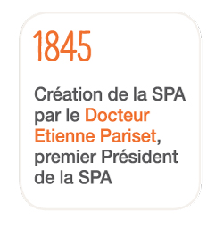
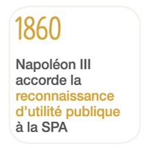

Notre histoire
Le premier combat de la SPA créée en 1845 par Etienne Pariset portait sur la protection des chevaux que les cochers parisiens maltraitaient. Au fil du temps, notre action s'est developpée et notre intérêt s'est élargi aux autres éspèces animales, en particulier nos plus proches compagnons, les chiens et les chats.
Fait marquant...

